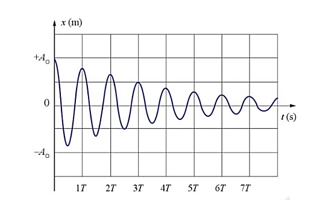
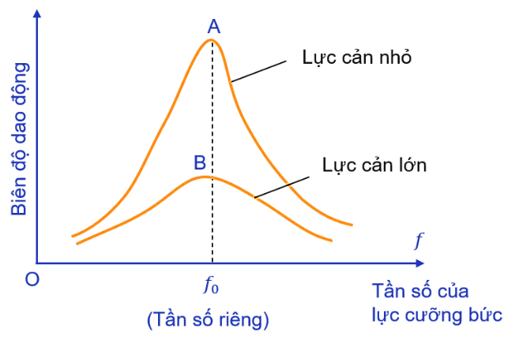
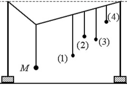
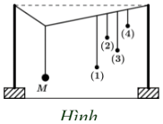

PHẦN I. Câu trắc nghiệm nhiều phương án lựa chọn
Mỗi câu có 4 phương án, chỉ chọn một đáp án đúng (0,25 điểm).
1
Dao động dưới tác dụng của ngoại lực biến thiên điều hoà $F=F_0\sin(\omega t+\varphi)$ gọi là dao động:
2
Dao động mà biên độ của vật giảm dần theo thời gian được gọi là dao động
3
Hiện tượng cộng hưởng nào sau đây là có hại?
4
Hiện tượng cộng hưởng nào sau đây là có lợi?
5
Hiện tượng nào được ứng dụng trong lò vi sóng để làm nóng thức ăn:
6
Trong những dao động tắt dần sau, trường hợp nào tắt dần nhanh có lợi
7
Chọn phát biểu đúng:
8
Khi nói về dao động tắt dần của một vật, phát biểu nào sau đây đúng?

9
Hiện tượng cộng hưởng xảy ra khi

10
Một hệ dao động chịu tác dụng của ngoại lực tuần hoàn $F_n = F_0\sin10\pi t$ thì xảy ra hiện tượng cộng hưởng. Tần số dao động riêng của hệ phải là
11
 Một con lắc lò xo có khối lượng 100 g dao động cưỡng bức ổn định dưới tác dụng của ngoại lực biến thiên tuần hoàn. Đồ thị biểu diễn sự phụ thuộc của biên độ vào tần số góc của ngoại lực tác dụng lên hệ có dạng như hình vẽ. Độ cứng của lò xo là
Một con lắc lò xo có khối lượng 100 g dao động cưỡng bức ổn định dưới tác dụng của ngoại lực biến thiên tuần hoàn. Đồ thị biểu diễn sự phụ thuộc của biên độ vào tần số góc của ngoại lực tác dụng lên hệ có dạng như hình vẽ. Độ cứng của lò xo là12
Một vật dao động cưỡng bức dưới tác dụng của ngoại lực $F=F_{0}\cos\left(8\pi t-\frac{\pi}{6}\right)$ (với $F_0$ không đổi, t tính bằng s). Tần số dao động cưỡng bức của vật là
13
Chọn một phát biểu sai khi nói về dao động tắt dần?
14
Phát biểu nào sau đây không đúng khi nói về hiện tượng cộng hưởng?
15
Một hệ dao động điều hòa với tần số dao động riêng 4 Hz. Tác dụng vào hệ dao động đó một ngoại lực có biểu thức $f=F_0\cos\left(8\pi t+\frac{\pi}{3}\right)$ N thì hệ sẽ
16
Trên hình vẽ là một hệ dao động. Khi cho con lắc M dao động, thì các con lắc (1), (2), (3), (4) cũng dao động cưỡng bức theo. Hỏi con lắc nào dao động yếu nhất trong 4 con lắc?

17
Một hệ dao động chịu tác dụng của ngoại lực tuần hoàn $F_n=F_0\sin 10\pi t$ thì xảy ra hiện tượng cộng hưởng. Tần số dao động riêng của hệ phải là
18
Khi đến các trạm dừng để đón hoặc trả khách, xe buýt chỉ tạm dừng mà không tắt máy. Hành khách ngồi trên xe nhận thấy thân xe bị “rung”. Dao động của thân xe lúc đó là dao động
19
Một hệ dao động chịu tác dụng của ngoại lực tuần hoàn $F_n=F_0\cos(10\pi t)$ (N) thì xảy ra hiện tượng cộng hưởng. Tần số dao động riêng của hệ phải là
20
Thực hiện thí nghiệm về dao động cưỡng bức như hình dưới. Năm con lắc đơn: (1), (2), (3), (4) và M (con lắc điều khiển) được treo trên một sợi dây. Ban đầu hệ đang đứng yên ở vị trí cân bằng. Kích thích M dao động nhỏ trong mặt phẳng vuông góc với mặt phẳng hình vẽ thì các con lắc còn lại dao động theo. Không kể M, con lắc dao động mạnh nhất là?
